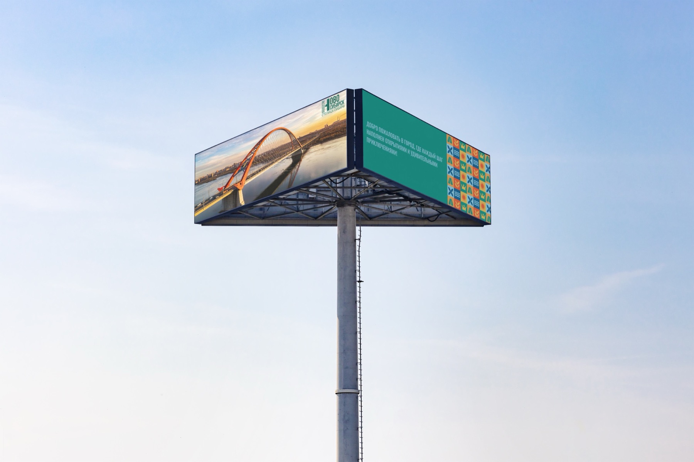
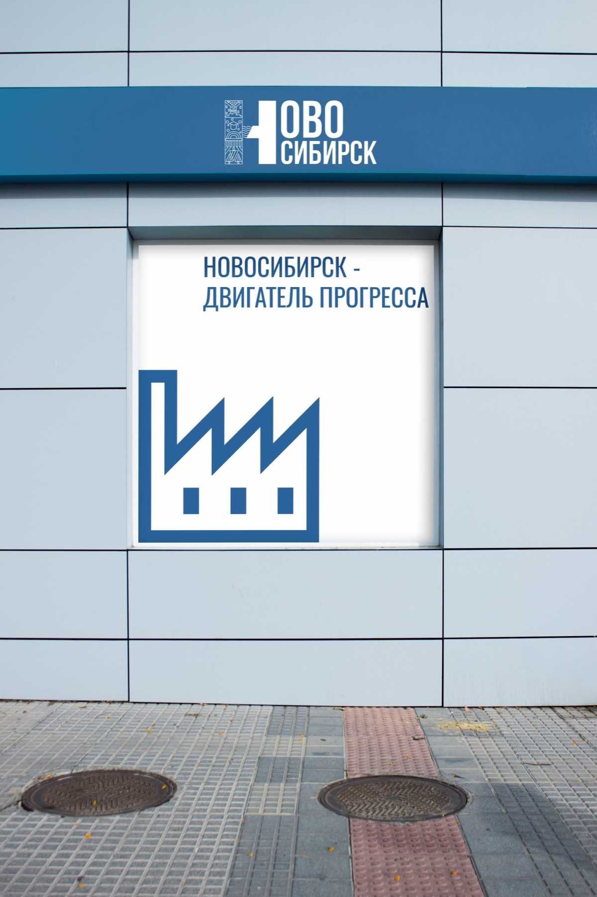
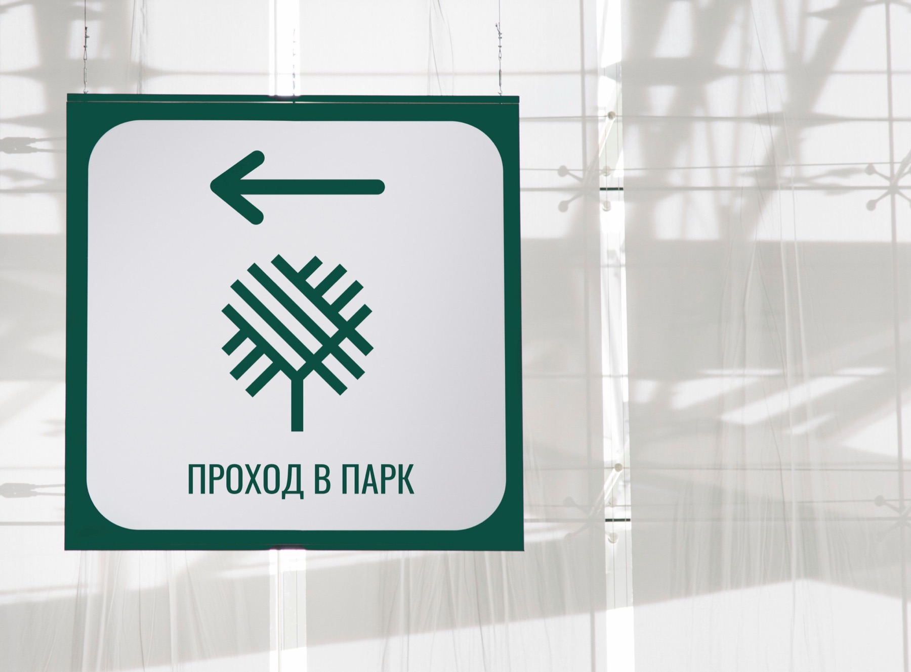
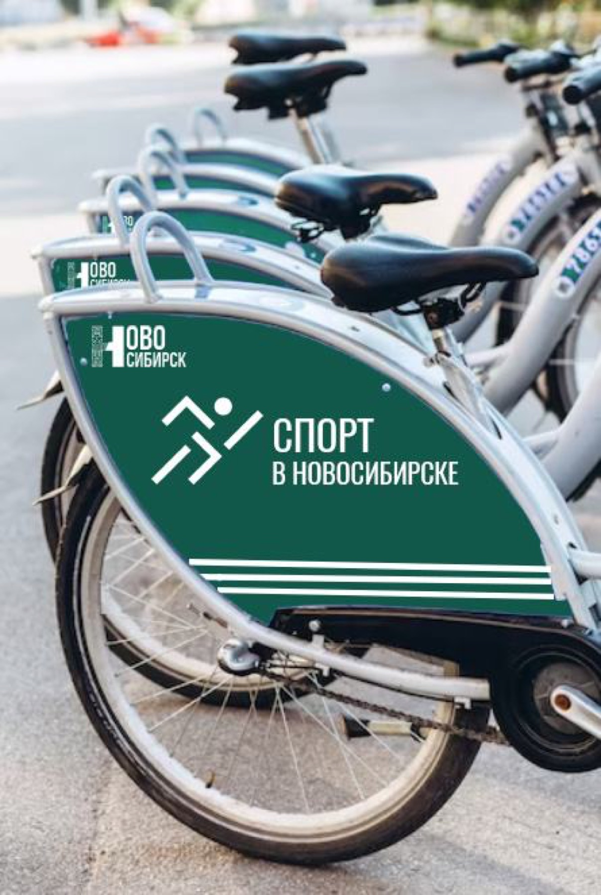
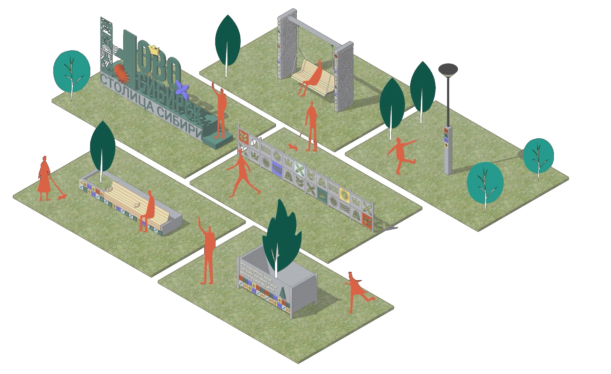

Туристическая стратегия Новосибирска
Территориальный брендинг · Победитель «Россвет» 2023

О проекте
Концепция строится на идее «город двух берегов». ДНК логотипа отражает философию: Новосибирск — это преобразование, наука и рекорды.
Задача
Разработать единую стратегию позиционирования туристического облика Новосибирска и создать дизайн-код для бренд-носителей и средового наполнения.
Главный вызов
Объединить два конфликтующих берега города в одну туристическую концепцию, используя самый длинный мост в России как метафору единства и символ преодоления разрозненности.
- 2023
- победитель конкурса «Россвет»
- 2
- берега в одной концепции
Место




Результат
Создана единая концепция, формирующая узнаваемый туристический облик Новосибирска и укрепляющая его позиции как центра науки, рекордов и единства. Проект — победитель конкурса «Россвет» 2023.
Решение
Мост стал смысловым центром: то, что разделяло, превращено в то, что соединяет. ДНК логотипа собирает три опоры городской идентичности — преобразование, науку и рекорды — и разворачивается в дизайн-код для навигации, средового наполнения и бренд-носителей.
Объём работ
- Территориальный брендинг
- Стратегия
- Дизайн-код
- Средовое наполнение
- Навигация